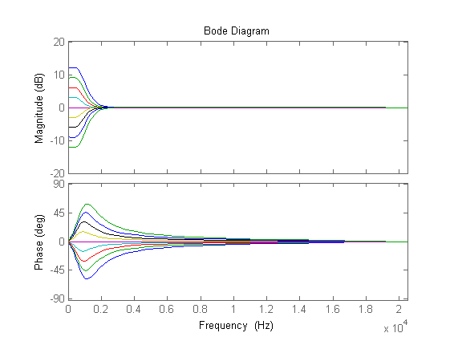

Testbench for eq/shelving+notch filters
For frequency and impulse response analysis and
by Preben Thorød - Gr 6 DAT096 - HandyEq - Chalmers University of Technology Using shelving() function by Jeff Tackett 08/22/05, Based on DAFX book and Zölner calculations and formulas for biquad filters.
Contents
System and analyzis parameters
Fs = 41000; %Hz Fsw = Fs*2*pi; Ts=1/Fs; N = 1024; %FFt window size % Single vs multiple filter curves single = 1; % Bode or freqz bodegen = 1; FreqScale = 'linear'; %'linear' or 'log'
Filter specification/ input parameters
fc = 800; % Cutoff frequency Gs = 12; Gm = [-12 -9 -6 -3 0 3 6 9 12]; % Gain in db Q = 0.8; % Q-factor type = 'Base_Shelf'; % 'Base_Shelf' or 'Treble_Shelf' % fc and G is dependent, if fc = 500, and G = 12 "damping_band = -12db % until 500Hz, then magnitude is -12db+3db (Need to check out this logic % closer!!!!
SINGLE
if single == 0
Generate filter coefficient
[b,a] = shelving(Gs, fc, Fs, Q, type);
Generate plot
%[H, f] = freqz(a,b,N,Fs); if bodegen ==1 %tfc = tf(a,b) tfd = tf(a,b,Ts) %bode(tfd) %Plots in rads/s %bodeplot(tfd); hbode = bodeplot(tfd); setoptions(hbode,'FreqUnits', 'Hz','FreqScale', FreqScale, 'Xlim',[0 Fs/2]); %doc plotoptions else freqz(a,b,N,Fs); end %%MULTIPLE
else B = cell(1,length(Gm)); A = cell(1,length(Gm)); H = cell(1,length(Gm)); tfd = cell(1,length(Gm)); %B=zeros(1,2); if bodegen == 1 for i = 1:length(Gm) [B{i}, A{i}] = shelving(Gm(i), fc, Fs, Q, 'Base_Shelf'); tfd = tf(A{i},B{i},Ts); hold on; hbode = bodeplot(tfd); setoptions(hbode,'FreqUnits', 'Hz','FreqScale', FreqScale, 'Xlim',[0 Fs/2]); %doc plotoptions end else for i = 1:length(Gm) disp(i) [B{i}, A{i}] = shelving(Gm(i), fc, Fs, Q, 'Base_Shelf'); hold on; %[H,f]=freqz(A{i},B{i},N,Fs); %[H{i} , f ] = freqz(A{i},B{i},N,Fs); %plot(f,abs(H{i})); freqz(A{i},B{i},N,Fs); %hold on; %hold off; end end %bodegen end